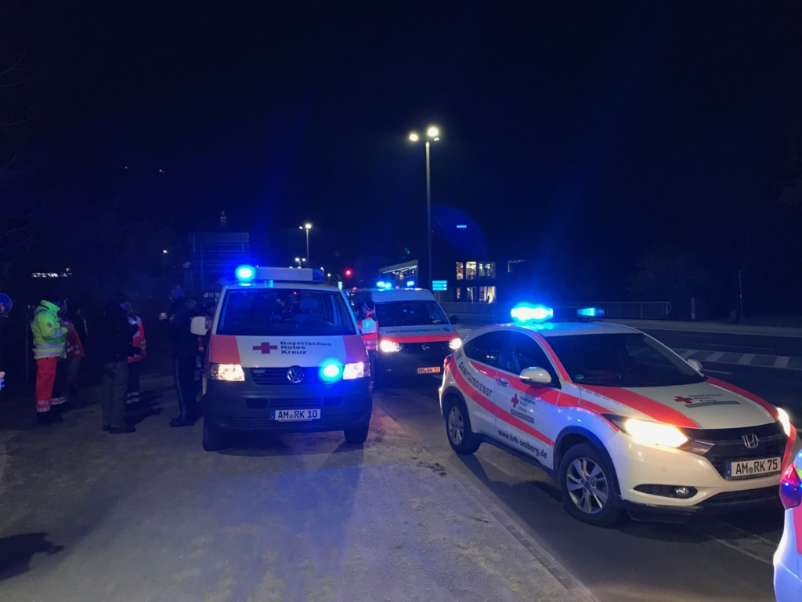

Die BRK Bereitschaften Amberg sind für den Notfall gerüstet. Mit vier sogenannten Schnelleinsatzgruppen (SEG’en) in den Bereichen Behandlung, Betreuung, Transport und Verpflegung stehen wir 24 Stunden, 7 Tage die Woche im Notfall zur Verfügung. Rund um die Uhr sind unsere Einsatzkräfte für den Katastrophenschutz alarmierbar.
Kommt es zu Großschadenslagen wie zum Beispiel ein Zugunglück, einer Massenkarambolage auf der Autobahn oder einem Großbrand in einem Mehrfamilienhaus sind wir zur Stelle. Wir unterstützen den Rettungsdienst bei der Versorgung der Patienten mit unserer SEG Behandlung.
Der Transport von Verletzten in umliegende Krankenhäuser wird durch unsere SEG
Transport übernommen.
Für unverletzte Betroffene steht unsere SEG Betreuung als erste Anlaufstelle
zur Verfügung. Bei größeren Einsätzen über eine länger anhaltende Einsatzdauer ist unsere
SEG Verpflegung gerüstet um vor Ort Speisen und Getränke für Betroffene und Einsatzkräfte zuzubereiten.
Die Ausbildung zum SEG Helfer ist eine spezielle Fortbildung.